{kind=link}
_edited.jpg){kind=link}

Barri Gòtic
기원전 1세기 로마 도시 바르시노의 성벽 위에 중세와 20세기 고딕 부흥이 층층이 쌓인 바르셀로나의 역사적 심장.

바르셀로나는 이번 여행의 첫 대도시이자 스페인에서 프랑스로 넘어가기 전 도시 리듬에 적응하는 3박의 출발점이다. 로마 도시 Barcino와 중세 구도심, 19세기 Eixample, 모더니즘 건축이 한 도시 안에 겹쳐 있어 명소의 수를 늘리기보다 서로 다른 도시 층을 연결해 보는 편이 좋다.
이번 일정에서는 유료 가우디 명소를 사그라다 파밀리아에 집중하고, Sant Pau의 모더니즘, Ciutat Vella의 역사와 도서관, MACBA의 현대미술, 시장과 동네 식생활을 함께 경험한다. 9월 1일에는 렌터카를 인수해 Sitges를 거쳐 Girona로 이동한다.
도착일은 체크인과 생활권 적응에 집중하고, 이후에도 한 날에 핵심 경험을 과도하게 늘리지 않는다. 아침은 숙소에서 가볍게 시작하고, 점심은 이동을 방해하지 않는 식사, 저녁은 그날 동선의 끝에서 먹는 것을 기본으로 한다.
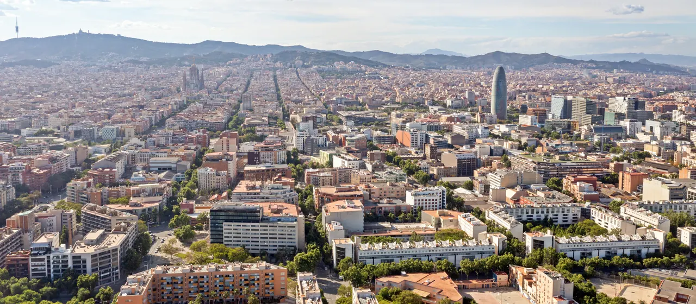
| 날짜 | 핵심 일정 |
|---|---|
| 8/29 토 | 도착 · Hostafrancs 체크인 · 생활권 적응 |
| 8/30 일 | Sant Pau · Sagrada Família |
| 8/31 월 | Ciutat Vella · Biblioteca de Catalunya · MACBA |
| 9/1 화 | Sants 렌터카 인수 · Sitges · Girona 이동 |
상세 시각과 이동, 식사와 대안은 그날의 Day 페이지가 정본이다.
현지 관광안내소가 종이로 나눠 주는 지도다. 목적지를 찍어 찾아가는 지도가 아니라, 이 고장에서 무엇이 유명하고 서로 얼마나 떨어져 있는지를 한눈에 보여 주는 쪽이다. 눌러서 크게 열면 확대된다 — 인터넷이 끊겨도 열린다.
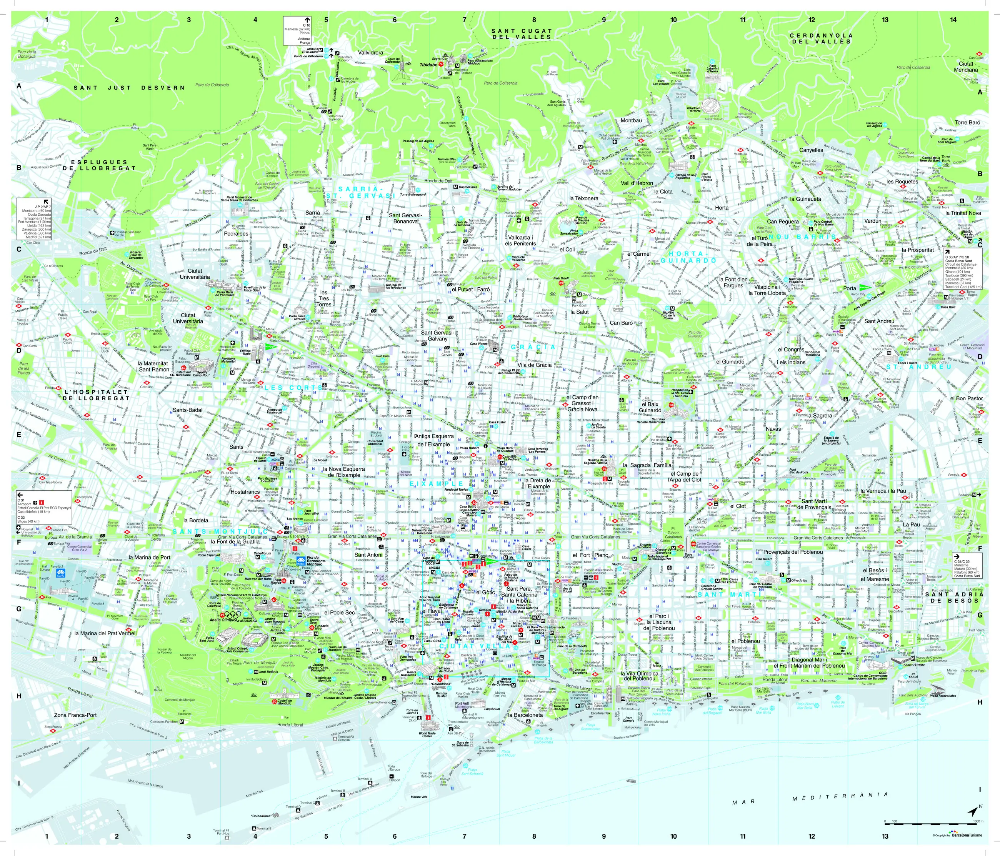
Eixample 격자와 Ciutat Vella 의 좁은 골목이 어디서 갈리는지 본다. 조밀한 가로도라 한눈에 들어오지는 않는다 — 전체 그림은 Bus Turístic 노선도 쪽이 낫고, 이 지도는 숙소에서 목적지까지 몇 블록인지 셀 때 쓴다.
저작권 · © Turisme de Barcelona. All rights reserved. 권리자: Turisme de Barcelona
공식 배포 파일에서 지도 면만 뽑아 해상도를 낮춰 비상업적 개인 여행 참고용으로 수록한다. 권리자·발행처·판본·원본 주소를 함께 표시하고, 요청이 있으면 내린다.
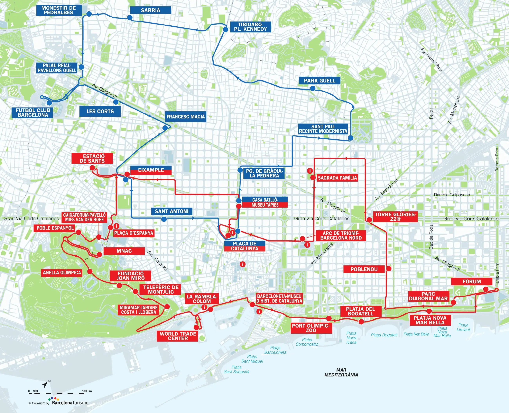
버스를 타지 않아도 쓸모가 있다. 사그라다 파밀리아·구엘 공원·카사 바트요·고딕 지구·몬주익이 도시 안에서 서로 얼마나 떨어져 있는지를 두 개 노선이 그려 준다. 하루에 무엇과 무엇을 묶을지 정할 때 먼저 편다.
저작권 · © TMB · Barcelona Bus Turístic. All rights reserved. 권리자: TMB · Barcelona Bus Turístic
공식 배포 파일에서 지도 면만 뽑아 해상도를 낮춰 비상업적 개인 여행 참고용으로 수록한다. 권리자·발행처·판본·원본 주소를 함께 표시하고, 요청이 있으면 내린다.
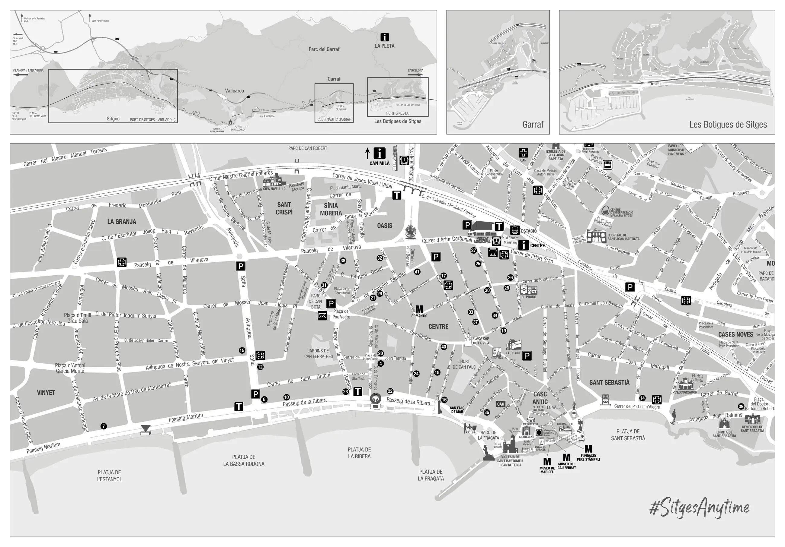
번호 41개로 카우 페라트·마리셀·스템플리 미술관과 산 바르토메우 성당, 그리고 해변 이름을 짚는다. 흑백이라 색으로 구분되지는 않지만 구시가(Casc Antic)와 해변 산책로의 관계는 분명하다.
저작권 · © Agència de Promoció Turisme de Sitges. All rights reserved. 권리자: Agència de Promoció Turisme de Sitges
공식 배포 파일에서 지도 면만 뽑아 해상도를 낮춰 비상업적 개인 여행 참고용으로 수록한다. 권리자·발행처·판본·원본 주소를 함께 표시하고, 요청이 있으면 내린다.
기원전 1세기 로마 도시 바르시노의 성벽 위에 중세와 20세기 고딕 부흥이 층층이 쌓인 바르셀로나의 역사적 심장.

화가·작가·수집가 산티아고 루시뇰(1861–1931)이 자신의 철제 공예품과 미술 소장품을 두기 위해 만들었다.
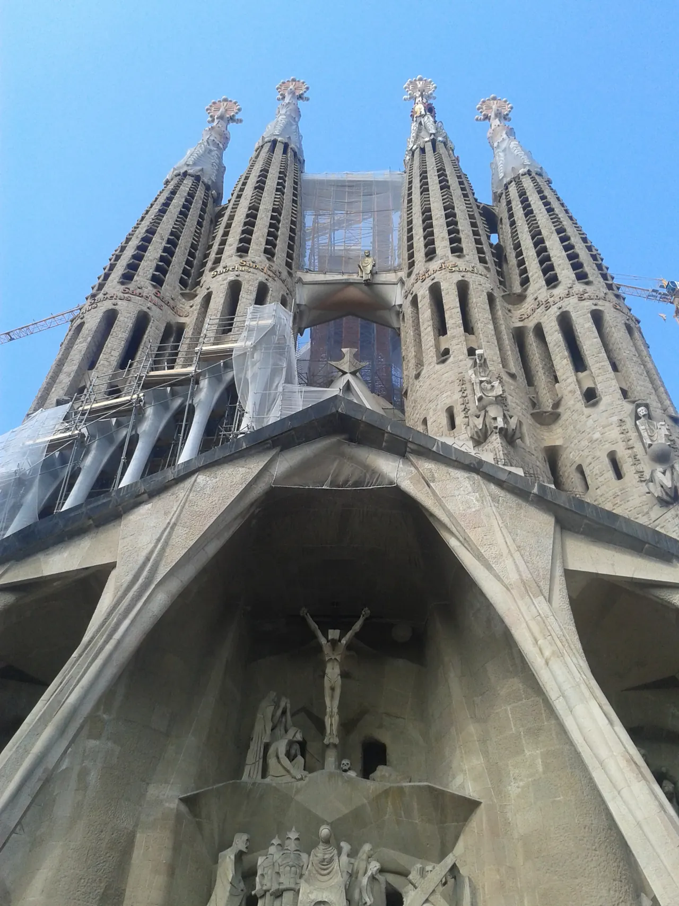
1882년에 시작해 아직 짓고 있는 가우디의 미완성 대표작이자 빛과 구조의 대성당.

류이스 도메네크 이 몬타네르가 설계한 카탈루냐 모더니즘 최대 복합체이자 햇빛과 바람으로 치유하던 전원도시 병원.

15세기 구 산타 크레우 고딕 병원이 카탈루냐 국립도서관으로 변모한 곳이자 가우디가 마지막 숨을 거둔 역사적 공간.

리처드 마이어의 백색 모더니즘 건축과 세계 스케이터 문화가 공존하는 라발 지구의 현대미술관.

⚠ 9/1(화)에는 관람할 수 없다.
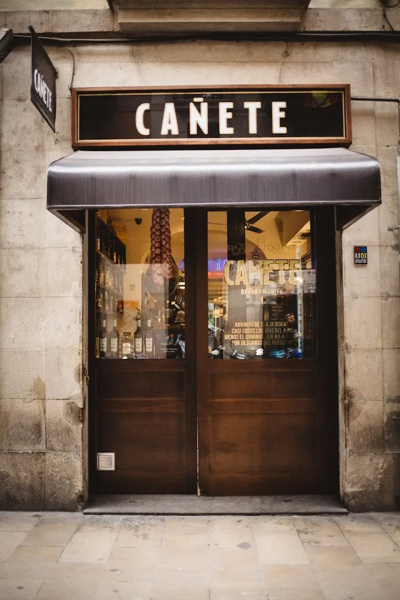
라발 지구 골목의 활기찬 오픈 바 카운터에서 펼쳐지는 최상급 카탈루냐 제철 타파스와 와인 미식.
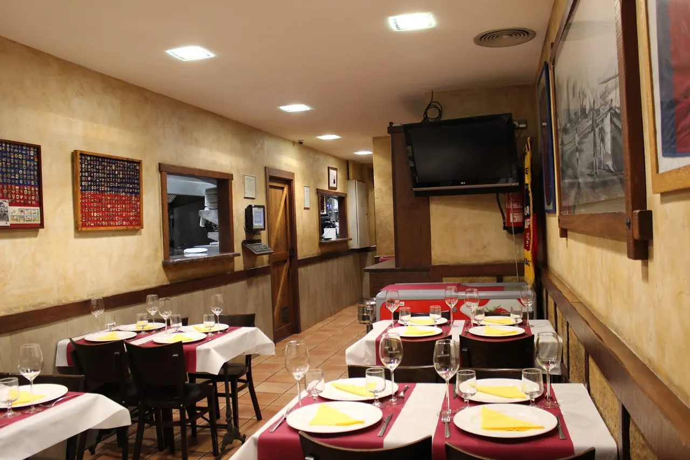
1942년부터 에이샴플레 주민들의 식탁을 지켜온 전통 보데가. 카탈루냐 숯불 구이, 카넬로니, 빠에야의 정석.

사그라다 파밀리아 뒤 골목의 해산물 마리스케리아. 얼음 위에 진열된 것을 무게로 골라 조리법을 정하면 그 자리에서 내준다.
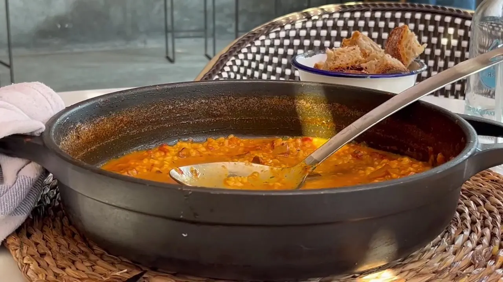
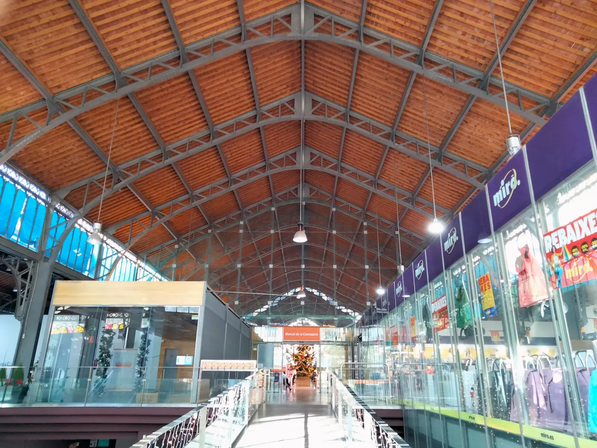
1888년 완공된 에이샴플레의 우아한 모더니즘 철골 시장. 24시간 꽃시장과 신선한 제철 과일·치즈의 보고.
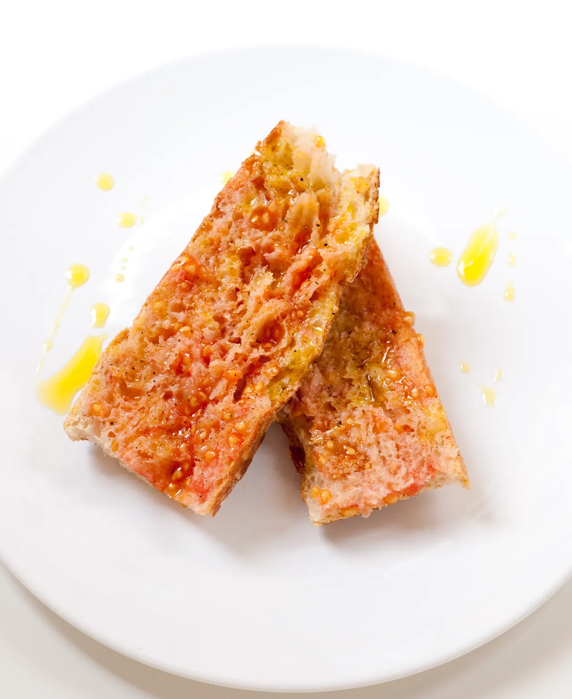
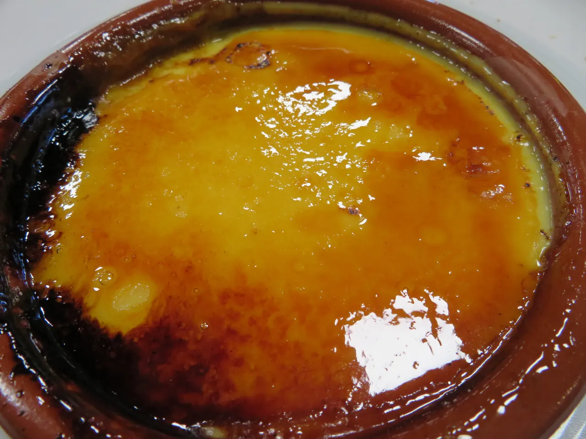
| 이름 | 어떤 음식인가 |
|---|---|
| Pa amb tomàquet | 구운 빵에 잘 익은 토마토를 문지르고 올리브유와 소금을 뿌린 카탈루냐의 기본 빵. 청하지 않아도 대개 함께 나온다 |
| Escalivada | 구운 가지·피망·양파를 올리브유와 함께 먹는 대표적인 채소 요리 |
| Esqueixada | 소금에 절인 대구를 익히지 않고 잘게 찢어 토마토·양파와 버무린 여름 샐러드 |
| Fideuà | 쌀 대신 짧고 가는 국수로 지어내는 해안식 파에야 |
| Arròs negre | 오징어 먹물로 색과 풍미를 낸 카탈루냐 해안의 쌀요리 |
| Botifarra amb mongetes | 카탈루냐 소시지를 구워 흰콩과 함께 내는 가장 흔한 한 끼 |
| Crema catalana | 표면의 설탕을 태워 굳힌 레몬·시나몬 향의 커스터드 디저트 |
Calçots는 구운 대파에 로메스코 소스를 곁들이는 겨울 음식이라 9월에는 만나기 어렵다.
Xató는 에스카롤에 소금대구·참치·안초비를 올리고 로메스코 계열 소스를 끼얹는 시체스의 샐러드다. ‘샤토’라는 말의 가장 오래된 문헌 기록은 1896년 시체스의 한 카니발 모임에서 나왔고 그 자리에 루시뇰이 있었다. 다만 이것도 겨울 음식이라, 9월 메뉴에 있으면 관광용일 가능성이 있다.
바르셀로나의 점심과 저녁은 한국보다 늦다. 특히 저녁 식당은 20시 이후에 본격적으로 붐비는 곳이 많다. 다만 도착 직후에는 현지 식사시간에 억지로 맞추기보다 피로 상태를 우선하고, 체류 후반으로 갈수록 조금씩 현지 리듬에 맞춘다.
장보기의 기준점은 Mercat de la Concepció다. 무엇을 사는지는 그 시장 페이지에 있다. 상황에 따라 쓰는 대안이 둘 있다.
슈퍼마켓은 성격이 갈린다. Mercadona는 가격과 자체브랜드가 강해 물·요거트·샐러드·견과류를 사기 좋고, Bonpreu·Esclat은 카탈루냐 제품 선택이 넓다. Condis·Caprabo는 도심 지점이 많아 도착일 급한 장보기에 편하고, Carrefour Express는 늦게까지 열지만 단가가 높아 소량만 산다.
8월 말은 무화과가 제철이다. 두세 개만 사서 그날 먹는다. 복숭아는 Lleida 산지가 유명하고 아침 과일과 샌드위치 후식에 맞는다. Gala 사과는 지로나 지역의 8월 수확 품종이라 다음 구간으로 이어진다. 포도도 이맘때부터 구하기 쉬워진다.
2인이 아침과 점심을 숙소에서 해결한다고 볼 때 사흘치 장보기는 대략 아래와 같다. 2026년 8월 조사 기준의 계획가이며 실제 결제액이 아니라 예산 설계용 범위다.
| 품목 | 수량 | 예상 |
|---|---|---|
| 생수 | 1.5L×4 | €4–7 |
| 샐러드·토마토 | 3회분 | €8–12 |
| 과일 | 5–6회분 | €10–15 |
| 빵 | 2개 또는 바게트 3개 | €5–8 |
| 햄·치즈 | 각 200–250g | €15–25 |
| 요거트·우유 | 3회분 | €6–10 |
| 커피·주스·견과 | 소량 | €8–12 |
| 합계 | €56–89 |
확정 숙소는 Plaça d’Espanya·Hostafrancs 생활권이다. 공항 도착일에는 바로 체크인하고, Sants 렌터카 영업소까지는 출발일에 도보로 이동한다.
숙소가 있는 Hostafrancs는 관광 중심부가 아니라 대로변 생활권이다. 시장과 슈퍼, 빵집이 이어져 있어 아침과 저녁 장보기가 숙소 앞에서 끝나고, 메트로로 어느 방향이든 붙는다.
일정에서 실제로 걷게 되는 동네는 넷이다.
기본은 러닝이다. Passeig de Sant Joan 중앙 보행축을 따라 Arc de Triomf를 지나 Parc de la Ciutadella 외곽을 한 바퀴 돌고 같은 길로 돌아온다. 왕복 5–7km, 35–45분. 신호가 단순하고 도시 격자와 개선문·공원을 한 번에 지난다. 8월 말에는 오전에도 더우니 08:00 이전에 출발하고 편안한 조깅으로 강도를 제한한다.
실내 시설이 필요하면 CEM Joan Miró 한 곳에서 헬스와 수영이 함께 된다. 성인 1회권 €13.85 (2026-08 조사 계획가). 다만 피트니스 구역은 사전 기술 인터뷰가 필요하다고 안내돼 있으므로, 1회권을 사기 전에 당일 이용이 되는지 확인한다. 절차가 번거로우면 러닝으로 대체한다. 수영은 선택 일정이며, 바르셀로나에서 무리하게 넣지 않아도 니스와 파리에서 충분히 배치할 수 있다.
늦은 귀가 — 시내 일정은 대부분 도보권이다. 피로가 크거나 늦어지면 Hola Barcelona가 적용되는 가장 단순한 메트로·버스 경로로 숙소에 돌아온다.
BCN T1에서 Aerobús A1 편도권으로 Plaça Espanya까지 이동한 뒤 숙소까지 약 5분 걷는다. 모바일 QR을 미리 준비하고 공항 택시는 선택지에서 제외한다.
8.29(토) · Day 1 · BarcelonaDay 4 아침 체크아웃 뒤 Barcelona Sants의 Hertz 영업소로 이동해 차량을 인수한다. Sitges와 Bàscara 이동은 공공교통이 아니라 예약 렌터카 일정이다.
9.1(화) · Day 4 · Barcelona → Sitges → BàscaraDay 1 확정 공항 이동; 모바일 QR로 탑승
한 사람당 1장; Day 2 아침부터 Day 4 이른 Sants 이동까지
첫 사흘은 차가 없다. 대부분의 일정이 도보권 안에서 이어지고, 메트로는 구간을 건너뛸 때 쓴다. 사그라다 파밀리아는 L2·L5, 라발과 MACBA는 L3(Universitat·Liceu)이 가장 가깝다.
지하철과 Rambla처럼 사람이 몰리는 곳에서는 가방을 몸 앞쪽에 두고, 휴대전화와 지갑을 바깥 주머니에 넣지 않는다.
Barcelona Sants가 인수 지점이다. 서류 확인과 차량 점검, 주차장 출차까지 60–90분을 잡아 둔다. 창구에서 프랑스로 넘어간다고 반드시 말한다 — 다음 날 콜리우르로 간다.
C-32 유료도로가 빠르고, 해안도로 C-31은 무료지만 굽이가 많아 느리다. 9월 1일은 출발 시각이 고정돼 있으므로 유료도로를 쓴다.
시체스 구시가지는 좁고 주차가 어렵다. 차는 외곽 환승 주차장 Aparcament Can Robert에 세우고 걸어 들어간다. 여권·노트북·카메라 등 귀중품은 주차된 차량 안에 남기지 않는다.
Hostafrancs·Espanya·Sants Estació와 Sant Pau Dos de Maig·Sagrada Família·Diagonal·Passeig de Gràcia 연결을 확인한다. 공항 도착은 이 지도의 L9가 아니라 확정한 Aerobús A1을 이용한다.
저작권 · © TMB. All rights reserved. 권리자: Transports Metropolitans de Barcelona (TMB)
사용자가 제공한 공식 PDF 원본을 비상업적 여행 참고 목적으로 변경 없이 수록하고 권리자와 저작권을 표시한다.
Montjuïc 대안을 쓸 때 Parc Montjuïc·Mirador·Castell 세 정류장과 funicular·Metro·bus 연결 위치를 확인한다. 케이블카는 Hola Barcelona Travel Card에 포함되지 않으며 현재 확정 동선도 아니다.
저작권 · © Telefèric de Montjuïc / TMB. All rights reserved. 권리자: Telefèric de Montjuïc / Transports Metropolitans de Barcelona (TMB)
사용자가 제공한 공식 PDF 원본을 비상업적 여행 참고 목적으로 변경 없이 수록하고 권리자와 저작권을 표시한다.
{kind=link}
{kind=link}